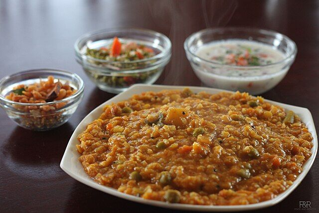

Bisi Bele Bath
Karnataka

Bisi Bele Bath is a traditional one-pot meal from Karnataka that translates to "hot lentil rice." This comforting dish combines rice, lentils, and vegetables cooked together with a special spice blend that includes aromatic ingredients like cinnamon, cloves, and fenugreek. The dish has a rich, slightly tangy flavor from tamarind and is typically garnished with ghee-roasted cashews and served with crispy papad and raita. Known for its warming and wholesome qualities, Bisi Bele Bath is a staple in Karnataka households and is often prepared during festivals and special occasions.